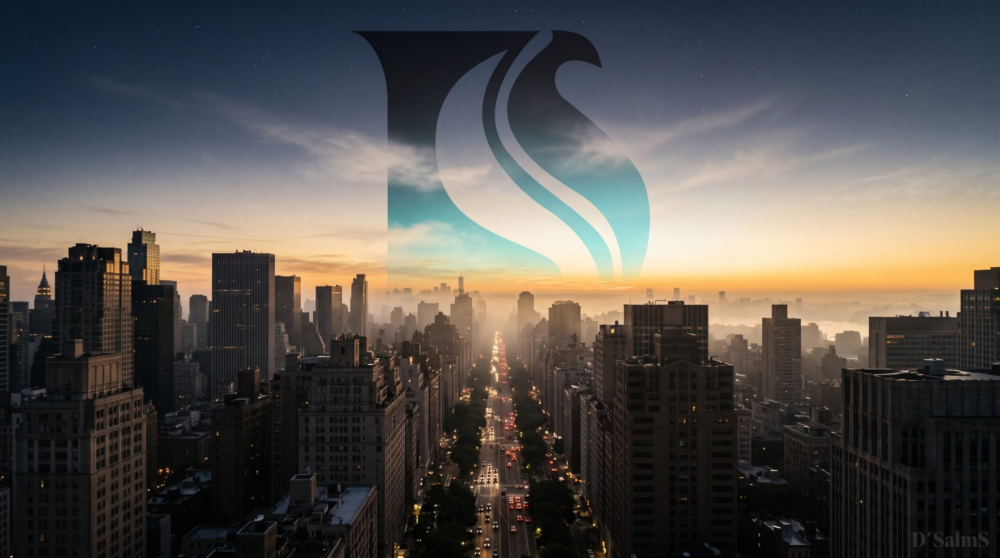

VISTE TUESENCIA.
Moda contemporánea inspirada en la fe y la identidad.
La fe también se lleva puesta.

D’Salms nace en 2026 en Pichanaqui como una iniciativa que une la fe cristiana, el diseño gráfico y la moda contemporánea.
Cada prenda busca que quien la lleva exprese lo que cree y quién es.
Leer la historiaCinco familias de prendas
Ver catálogoEstilo moderno, mensaje de fe.
Nuestra misión es ofrecer prendas de calidad que combinen un estilo moderno con mensajes inspirados en la fe cristiana.
La visión: ser una marca reconocida en Pichanaqui y, progresivamente, en otras ciudades del Perú para 2028.
Fe
Mensajes inspirados en la fe cristiana.
Calidad
Prendas pensadas para durar y verse bien.
Creatividad
Diseño gráfico aplicado a la moda.
Identidad
Que cada persona exprese quién es.
Del mensaje a la prenda
Un mensaje de fe
Todo diseño parte de una idea o pasaje que inspira.
Diseño gráfico
Tipografía, color y composición dan forma visual al mensaje.
Prenda contemporánea
El diseño se lleva a polos, hoodies, conjuntos, camisas y pantalones.
Comunicación
La marca se presenta con un tono cercano y una identidad coherente.
Viste tu esencia.
El símbolo DS en sus cinco versiones oficiales. Versión actual: turquesa.
IMAGOLOGÍA · ICONOLOGÍA · IMAGEN VERBAL
Ficha técnica de identidad de marca
Tres dimensiones que explican cómo D’Salms construye y comunica su identidad.
Explorar ficha técnicaViste tu esencia.
Moda contemporánea de inspiración cristiana, desde Pichanaqui.